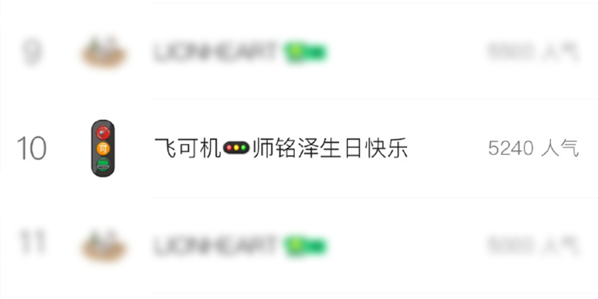

【Kohinoor综合】真的是新人吗?!

[“怪物新人”飞可机Fake-J🚦今日出道，《i超月零》音源公开3小时空降TOP 10! “真的是新人吗?!”]
截止8日15时49分，新曲《i超月零》音源公开5小时49分后，人气值突破5240，并一直呈较好的上升趋势，再次刷新自身记录。恭喜妹妹们！！
Fake-J随即通过官方微博表示：
“0周年快乐，托灯神怒那们的福和大家一同度过的每一瞬间都很幸福和感动。感谢灯神怒那发出的光芒照亮了我们前行的每一步，虽然很难用谢谢一句话全部表达出来，但总是很感谢，很感谢。我们以后也会有更多的日子在一起创造幸福的回忆！爱你们，灯神怒那们，马上见面吧!!”
据悉，此次歌曲《i超月零》为「X」未知音乐人计划与FaKe-J合作的单曲，于11月8日10：00正式上线。这是FaKe-J官宣出道后的首支单曲，寓意过往全部归零，开始人生新的征程。
《i超月零》由强烈的trap电子风格配合低沉的808 bass，嘻哈风味十足的同时，又混入了高级的交响乐作为主旋律使得整首歌气势磅礴。
对于FaKe-J而言，《i超月零》不仅是表达重新开始，更是唱出了妹妹们的野心。“超月”是她们身上还未展露的超级能量；“没有人能阻止我”是她们想要攀登的高峰；携着梦想前进，总有一天会“比灯光更耀眼”。希望通过歌曲表达妹妹们无论遇到任何逆境都要勇敢面对，坚持自己内心真正想法才会更加强大的想法。
下面是《i超月零》的全部歌词，也希望妹妹们今后继续努力再接再厉，为我们带来更好的作品和舞台。
- Oh that's my favorite things
- Make it like burberry
- 把经历都记录成history
- 比你 会动脑筋
- 所有的计划都finish
- 时间都留给了下一个business
- 突破了地心引力 I feel so lit
- 他们被甩后面 一点都不意外
- 看着我 表情很夸张
- 提醒你 I wanna be the king wanna see
- Enemies 全部都bustdown yeah
- 路上布满我的脚印bro
- 暗道里面你要当心走
- 这里太糟糕 I gotta go
- 让我名字everybody know
- 别挡住我前进的脚步早看穿你招数
- 我掌握着所有能成功的要素
- 不和你打招呼
- 你根本就没法能达到的高度
- 那能力被高估
- Ladies and gentlemen注视我表演
- 我想法很超前 比灯光更耀眼
- U better know u better know
- U can u can u can u can
- U can not stop me
- 没有人能阻止我
- Supermoon 满月传说
- Nobody can stop me now
- Nobody nobody nobody nobody
妹妹们，加油！